3SDS · 25.11.2026 · סבב 4.1
למעלה: הלוגו. מתחתיו: אותה מילה בפונט החדש. אותו קו, אותו S, העלה מהלוגו הוא הנקודה, והקצוות חתוכים באלכסון כמו קצה של עט.

3Shamrocks.Studio
3Shamrocks.Studio
ככה זה נראה בראש האתר.
Brands that don't look like everyone else.
20 years. One studio. Me. From the logo to the code.
שני משקלים. אותיות גדולות, קטנות, מספרים.
ABCDEFGHIJKLMNOPQRSTUVWXYZ
abcdefghijklmnopqrstuvwxyz
0123456789 ?!:.,-'/